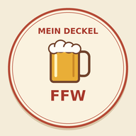

Feuerwehr Wasser
Deine Schulden
Alles bezahlt. Danke!

Feuerwehr Wasser
Dein Getränkekonto auf einen Blick.
Feuerwehr Wasser
Deine Schulden
Alles bezahlt. Danke!
Bitte bei Gelegenheit begleichen. Danke!
Deine Treuepunkte
0Die Verwaltung prüft den PayPal-Eingang und trägt ihn ein. Gib bei der Zahlung bitte deinen Namen an. Erst danach sinkt dein Deckel.
Die Anzeige zeigt den zuletzt vom Gerätehaus übertragenen Stand. Neue Buchungen und geprüfte PayPal-Zahlungen können mit einigen Minuten Verzögerung erscheinen.
Mit dem Bierdeckel-Symbol hast du deinen Deckel immer griffbereit.
Dein persönlicher Link ist dein Zugang. Bitte für dich behalten.